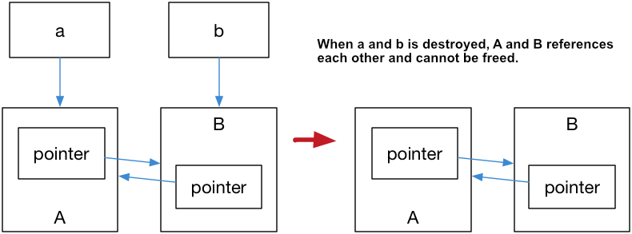

C++ Smart Pointers
C++ Smart Pointers
与托管语言不同，C没有自动垃圾回收功能（在程序运行时释放堆内存和其他资源）。C程序负责将获取的所有资源返回到操作系统，己动态分配的堆内存由于某种原因程序未释放或无法释放，造成系统内存的浪费被称为内存泄漏。在进程退出之前，泄漏的资源对其他程序不可用。总而言之，内存泄漏是 C-style编程中出现 bug 的一个常见原因。
RAII
现代c++通过在堆栈上声明对象来尽可能避免使用堆内存。当一个资源对于堆栈来说太大时，它应该被一个对象所拥有。当对象被初始化时，它获得它所拥有的资源。然后，该对象负责释放其析构函数中的资源。拥有的对象本身是在堆栈上声明的。对象拥有资源的原则也称为 “Resource Acquisition Is Initialization” 或 RAII。
当拥有资源的堆栈对象超出作用域时，将自动调用其析构函数。这样，C ++中的垃圾回收与对象生存期密切相关，并且是确定性的。资源总是在程序的可控的已知位置释放。这利用了核心语言特性(对象生存期、范围退出、初始化顺序和堆栈展开)来消除资源泄漏并保证异常安全性。
1 | std::mutex m; |
通过使用智能指针进行内存分配，可以消除内存泄漏的可能性。它们的行为类似常规指针，重要的区别是它负责自动释放所指向的对象。shared_ptr 和 unique_ptr 的区别在于管理底层指针的方式：shared_ptr 允许多个指针指向同一个对象；unique_ptr 则“独占”所指向的对象。weak_ptr 是一种弱引用，指向 shared_ptr 所管理的对象。
智能指针是模板，当创建时，需要提供指针指向的类型。默认初始化的智能指针保存着一个空指针。
unique_ptr
只允许底层指针有一个所有者，与原始指针一样高效。unique_ptr 的基本特征：大小是一个指针，可移动（将所有权转移到新 unique_ptr 并重置旧 unique_ptr），但不可复制或共享。unique_ptr 通过引用来传递，如果尝试通过此处的值传递，由于删除了 unique_ptr 复制构造函数，编译器将引发错误。

1 | //Example |
shared_ptr
采用引用计数的智能指针，专门用于可能需要多个所有者管理内存中对象的生命周期的方案。大小为两个指针；一个用于对象，另一个用于包指向共享控制块。
控制块是一个动态分配的对象，其中包含：
- 指向被管理对象的指针或被管理对象本身
- 删除器（类型擦除）
- 分配器（类型擦除）
- 占有被管理对象的
shared_ptr的数量 - 涉及被管理对象的
weak_ptr的数量
初始化 shared_ptr 之后，您可以复制它，在函数参数中按值传递它，并将其分配给其他 shared_ptr 实例。 所有实例都指向同一个对象，并且共享对一个控制块的访问权，每当添加新的 shared_ptr，超出范围或对其进行重置时，该控制块都会递增和递减shared_ptr 引用计数。如果shared_ptr 引用计数减至零，控制块就会调用被管理对象的析构函数。但控制块本身直到 weak_ptr 计数器同样归零时才会释放。
shared_ptr 的默认内存布局（通过构造函数）
使用make_shared / allocate_shared创建时的内存布局：
Why are two raw pointers to the managed object needed in std::shared_ptr implementation?
首次创建内存资源时，尽可能使用 make_shared 函数创建 shared_ptr。 make_shared 是 exception-safe 的。它在同一个调用中为控制块和资源分配内存 (Difference in make_shared and normal shared_ptr in C++)，从而减少了构造开销。 如果不使用 make_shared，则必须先使用显式新表达式创建对象，然后再将其传递给shared_ptr构造函数。
1 | //Example |
weak_ptr
结合 shared_ptr 使用的特例智能指针，不控制所指向对象生命周期的智能指针。大小为两个指针；一个用于存储构建它的 shared_ptr 的指针，另一个用于指向 共享控制块。将一个 weak_ptr 绑定到一个 shared_ptr 不会改变 shared_ptr 的引用计数，一旦最后一个指向对象的 shared_ptr 被销毁，对象就会被释放。但控制块本身直到 weak_ptr 计数器同样归零时才会释放。
当weak_ptr需要获得临时所有权时，需要将其转换为 shared_ptr，此时如果原来的 shared_ptr 被销毁，则该对象的生命期将被延长至这个临时的 shared_ptr 同样被销毁为止。
最好的设计是尽可能避免共享指针的所有权。但是，如果必须共享 shared_ptr 实例的所有权，则应避免在它们之间循环引用。
circular references
在基于引用计数的任何类型的系统中，对类的引用可以形成循环，即第一个对象引用第二个对象，第二个对象引用第三个对象，依此类推，直到某个最终对象引用回第一个对象。因此，引用计数永远不会达到0，对象也永远不会被释放。
1 | //Example |
当 shared_ptr 离开作用域时，引用计数仍然都是1，因此A和B对象不会被删除。

1 | //Solution |
References
Smart pointers (Modern C++) | Microsoft Docs